Stages
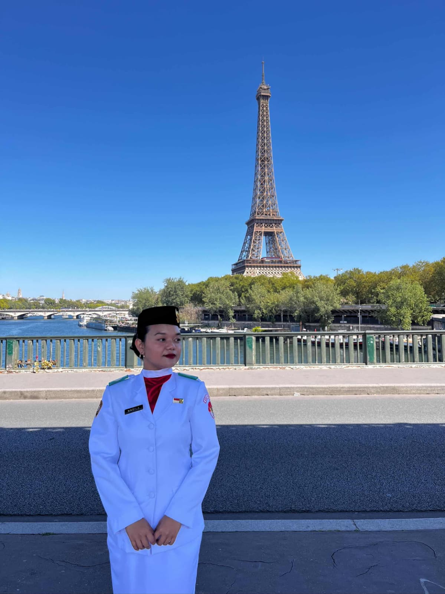
Competences
Compétence 1 Analyser les enjeux de la société en lien avec les champs professionnels
Au cours de ma formation et de mes stages, j’ai été amenée à réaliser plusieurs travaux de recherche qualitatifs et
quantitatifs portant sur différentes problématiques sociales. Ces expériences m’ont permis de développer mes capacités
d’analyse, d’observation et de réflexion sur les enjeux sociaux contemporains.
Dans le cadre de ma licence de sociologie, j’ai effectué une étude en sciences humaines et sociales menée en groupe de
quatre étudiantes sur le sujet « Les femmes n’ayant pas d’enfant par choix, et représentant de ce fait un écart à la
norme ». Après avoir défini collectivement la problématique et les objectifs de recherche, j’ai réalisé une partie de la
revue de littérature à partir de recherches scientifiques et de fiches de lecture. Nous avons ensuite identifié les
profils des personnes à interroger et préparé les outils de collecte de données. J’ai diffusé l’enquête auprès du public
ciblé et mené deux entretiens semi-directifs. Enfin, nous avons procédé à l’analyse des données recueillies et à une
mise en commun des résultats afin de construire une réflexion collective autour des normes sociales et des
représentations liées à ce fait.
En première année de BUT Carrières Sociales parcours CGE3S, j’ai réalisé une étude monographique en groupe portant sur
la précarité étudiante à Alençon en 2024 autour de la question « Comment les étudiants et les acteurs institutionnels
agissent face à la précarité financière à Alençon ? ». Ce travail m’a amenée à analyser les dispositifs d’aide existants
ainsi que le rôle des différents acteurs institutionnels et associatifs présents sur le territoire. Pour cela, j’ai
effectué des recherches documentaires, identifié les acteurs concernés et recueilli des informations sur les actions
mises en place pour accompagner les étudiants en situation de précarité.
Par la suite, lors de mon deuxième stage au CCAS d’Alençon, j’ai participé à la réalisation d’un diagnostic portant sur
la précarité alimentaire étudiante. Dans ce cadre, j’ai contribué à la conception et à la diffusion d’un questionnaire
afin d’identifier les besoins des étudiants et d’évaluer la pertinence de la création d’une épicerie étudiante sur le
campus. Cette démarche s’inscrivait dans un contexte où la précarité alimentaire représente un enjeu social majeur à
l’échelle nationale, ce qui est également étudié par plusieurs associations d’aide alimentaire et des institutions
publiques.
Dans le cadre du cours « Analyse de la société et de la population », j’ai également réalisé un travail de recherche
portant sur les conditions de travail d’une psychologue du travail au sein du cabinet « Mieux vivre son travail » à
Alençon. Cette étude m’a permis d’analyser les réalités professionnelles, les contraintes rencontrées dans l’exercice du
métier ainsi que les enjeux liés à la qualité de vie au travail.
Enfin, dans le cadre de ma troisième année de BUT, je réalise actuellement une étude de recherche portant sur la gestion
des ESSMS (Établissements et Services Sociaux et Médico-Sociaux) autour de la thématique : « L’impact démographique du
vieillissement sur l’évolution des besoins sociaux et sanitaires ». Cette recherche me permet d’approfondir ma réflexion
sur les transformations démographiques et leurs conséquences sur l’organisation des structures médico-sociales,
notamment sur l’adaptation des accompagnements proposés aux personnes âgées.
Compétence 2 Construire des dynamiques partenariales
Dans le cadre de la formation du BUT Carrières Sociales, un festival intitulé « Bien Vieillir » est organisé chaque
année autour des enjeux liés au vieillissement. Cet événement a pour but de sensibiliser le public, de favoriser le
partage et de réunir différents acteurs du territoire intervenant auprès des seniors.
Lors de ma deuxième année de BUT, j’ai participé à l’organisation de ce festival autour du thème de
l’intergénérationnalité. Afin de préparer l’événement, les étudiants ont été répartis en plusieurs groupes de travail
chargés de différents aspects de l’organisation : communication, budget et partenariats. J’ai intégré le groupe en
charge du budget.
À cette occasion, j’ai effectué des recherches de financement en demandant les informations à la Directrice du Crous qui
porte souvent le projet étudiant. J’ai pris contact avec le service universitaire de l’action culturelle afin de
demander les possibilités de subvention pour soutenir le projet. Ce travail m’a permis de découvrir les premières
démarches liées à la recherche de financements et aux échanges avec les partenaires institutionnels.
Dans le cadre des activités de la journée, chaque groupe devait proposer deux activités en lien avec le thème de
l’intergénérationnel. Nous avons proposé, avec mon groupe, un ciné-débat autour du film « Coloc de Choc », afin de créer
un temps d’échange entre les participants autour des relations entre générations et de sensibiliser à la maladie
d’Alzheimer.
Pour la seconde activité, nous avons proposé le dispositif Silver Geek, un programme favorisant les échanges entre
seniors et enfants à travers des activités numériques et ludiques. Ce projet répond à la fois aux enjeux de la perte
d’autonomie et de l’exclusion numérique des personnes âgées.
Pour préparer les activités, je suis intervenue dans une école primaire afin de présenter le projet aux élèves et de les
sensibiliser à cet événement. Cette intervention m’a permis d’adapter ma communication à un jeune public et de présenter
les objectifs du projet de manière accessible. Par la suite, j’ai échangé avec la responsable du pôle senior du centre
social Croix Mercier afin de coordonner l’organisation de la journée, préparer les activités et assurer la collaboration
entre les différents participants et partenaires mobilisés pour l’événement.
Lors de mon deuxième stage au CCAS d’Alençon, j’ai également participé à une démarche partenariale dans le cadre de
l’appel à projets « Mieux manger pour tous ». Cette expérience m’a amenée à travailler avec différents acteurs
institutionnels, associatifs et structures de l’économie sociale et solidaire, tels que les Restos du Cœur, la Banque
Alimentaire, le PAT, le Collectif d’urgence, le CROUS ou la Croix-Rouge,...
J’ai participé à plusieurs réunions et groupes de travail réunissant ces partenaires afin d’échanger sur les besoins
identifiés, les actions déjà existantes et les solutions envisageables pour favoriser l’accès à l’aide alimentaire.
Cette expérience m’a permis de comprendre l’importance du travail en réseau et de la coopération entre les acteurs du
territoire dans la construction de projets collectifs. Elle a également renforcé mes compétences en communication
professionnelle et ma capacité à adapter ma posture professionnelle selon les interlocuteurs et les contextes de
travail.
Compétence 3 Conduire un projet pour des établissements et services sanitaires et sociaux
Dans le cadre du cours « Assurer une veille réglementaire », j’ai réalisé un rapport portant sur le dispositif des
personnes qualifiées, qui a pour objectif d’analyser la mise en application de ce dispositif dans les différents
départements français, en vérifiant l’existence obligatoire de la liste des personnes qualifiées et en identifiant les
éventuelles difficultés rencontrées pour y accéder. Ce travail m’a permis d’analyser l’application de la loi du 2
janvier 2002 rénovant l’action sociale et médico-sociale au sein des institutions, notamment en ce qui concerne les
droits des usagers, les dispositifs de recours et les obligations réglementaires des établissements. À travers cette
étude, j’ai appris à rechercher, conduire et analyser des entretiens semi-directifs.
Dans le cadre de mon troisième stage, réalisé au sein de l’EHPAD La Miséricorde de Sées, je participe également à
différentes démarches liées à la qualité et à l’amélioration continue des pratiques professionnelles. Lors de la
préparation de l’auto-évaluation HAS de fin d’année, j’ai contribué à la démarche qualité mise en place au sein de
l’établissement.
Dans ce contexte, j’ai participé à l’organisation et à la conduite d’entretiens avec les résidents afin d’identifier
leurs besoins, leurs attentes et leurs souhaits concernant leur accompagnement au quotidien, leur droit et liberté. À
partir des informations recueillies, j’ai contribué à l’élaboration d’un diagnostic permettant d’identifier les points
forts, les difficultés rencontrées ainsi que les axes d’amélioration à travailler au sein de l’EHPAD. Cette démarche a
été menée en prenant en compte les moyens disponibles, les recommandations de bonnes pratiques, les textes
réglementaires et les législations en vigueur.
J’ai également participé aux échanges entre les résidents et les professionnels afin de favoriser une réflexion
collective sur les pratiques de l’établissement et les améliorations possibles. Dans ce cadre, j’ai contribué à
l’organisation de la commission bientraitance et à l’animation d’un groupe de travail, visant à définir collectivement
la notion de bientraitance au sein de l’EHPAD et à réfléchir aux pratiques professionnelles associées.
Par ailleurs, je participe actuellement au recueil et à l’identification des indicateurs de besoins dans le cadre du
plan pluriannuel d’investissement. Ce travail s’inscrit dans une démarche d’analyse financière prospective sur cinq ans
et vise à identifier les besoins futurs de l’établissement afin d’anticiper les investissements nécessaires au
fonctionnement et à l’amélioration de l’accompagnement des résidents.
Ces différentes expériences me permettent de développer mes compétences en conduite de projet, en démarche qualité et en
analyse des besoins au sein d’un établissement médico-social.
Compétence 4 Construire des accompagnements adaptés
Lors de mon troisième stage au sein de l’EHPAD La Miséricorde, j’ai participé à l’accueil et à l’accompagnement des
nouveaux résidents afin de faciliter leur intégration au sein de l’établissement et d’assurer une prise en charge
adaptée à leurs besoins.
Dans ce cadre, j’ai recueilli les différentes informations concernant la situation de la personne accueillie, notamment
ses besoins, ses habitudes de vie, son état de santé, ses traitements en cours ainsi que les éventuelles difficultés
rencontrées. À partir de ces
éléments, j’ai transmis les informations aux équipes concernées afin de favoriser une coordination adaptée entre les
professionnels et de garantir la continuité de l’accompagnement.
Par exemple, lors de l’admission d’une résidente présentant, suite à une chute ayant entraîné une fracture, ce qui
nécessitait des séances de kinésithérapie tous les matins, j’ai transmis les informations et les prescriptions aux
infirmières afin qu’elles puissent coordonner l’intervention du kinésithérapeute au sein de l’EHPAD et assurer le suivi
des soins prescrits par le médecin traitant. L’importance de partage des informations entre les professionnels et du
travail en équipe pluridisciplinaire dans l’accompagnement des résidents.
J’ai également participé à la formalisation des projets personnalisés d’accompagnement en prenant en compte les
souhaits, les besoins et les habitudes de vie des résidents ainsi que les échanges avec les familles. Dans ce cadre,
j’ai intégré les directives anticipées et les personnes de confiance dans les dossiers des résidents afin de garantir le
respect de leurs choix et de leurs droits.
Par exemple, lors de l’élaboration d’un projet personnalisé avec une résidente et sa fille lors d’un échange en
visioconférence, celles-ci ont exprimé le souhait de maintenir des contacts réguliers par appel vidéo, estimant que ces
échanges contribuaient au bien-être de la résidente. Afin de répondre à cette demande, une solution a été proposée avec
la mise à disposition d’un téléphone pour faciliter les appels vidéo. Les aides-soignantes référentes accompagnent
ensuite la résidente dans l’utilisation du dispositif lors de leurs passages afin de maintenir ce lien familial de
manière régulière.
Par ailleurs, j’ai réalisé une veille documentaire afin de mettre à jour certaines recommandations de bonnes pratiques
dans le cadre de l’auto-évaluation de l’établissement. J’ai également participé à la gestion des plannings et à
l’organisation de formations destinées aux équipes, notamment la formation Netsoins et la formation incendie.
Ces différentes missions m’ont permis de développer ma capacité à construire des accompagnements adaptés en prenant en
compte les besoins des résidents, les ressources de l’établissement et la coordination entre les différents
professionnels intervenant dans la prise en charge.
Compétence 5 Assurer l'encadrement
Dans le cadre des missions liées aux ressources humaines en EHPAD, j’ai participé à différentes actions d’encadrement et
de coordination des équipes afin d’assurer la continuité de l’accompagnement des résidents et le bon fonctionnement de
l’établissement.
Au quotidien, j’ai contribué à mobiliser, coordonner et accompagner les professionnels dans l’organisation de leur
travail et l’atteinte des objectifs fixés.
J’ai également participé à l’intégration des nouveaux professionnels et des stagiaires en présentant le fonctionnement
de l’établissement, les missions des équipes ainsi que certaines procédures et outils utilisés au quotidien. Dans le
cadre des pratiques RH, j’ai pris part à certaines démarches de recrutement et de remplacement, notamment au suivi des
candidatures, à la conduite des entretiens et à l’identification des besoins en personnel en fonction des situations
rencontrées au sein de l’établissement.
Par ailleurs, j’ai contribué à l’organisation des activités et à la gestion des plannings afin d’anticiper les absences
et de faire face aux imprévus. Lorsque des besoins de remplacement apparaissaient, je vérifiais d’abord les plannings
afin de m’assurer du respect des temps de travail et des contraintes horaires des professionnels. Ensuite, je contactais
les membres de l’équipe susceptibles d’être disponibles afin d’organiser rapidement une solution de remplacement adaptée
aux besoins du service.
J’ai également participé à des échanges avec les équipes concernant certaines situations professionnelles afin
d’identifier les difficultés rencontrées, prévenir les tensions et réfléchir collectivement à des solutions ou à des
modalités de prise en charge adaptées. Cela m’a permis d’améliorer ma capacité de la coordination, de l’écoute et de la
gestion des relations professionnelles dans le travail d’encadrement.
Engangements
Depuis mon arrivée en France, je me suis engagée activement dans plusieurs associations étudiantes et des actions
bénévoles qui m’ont permis de développer ma connaissance interculturelle, mon sens des responsabilités et mes capacités
relationnelles. Ces engagements ont également renforcé ma capacité à travailler avec des personnes d’horizons différents
et à participer à des projets collectifs à dimension culturelle, sociale et associative.
Je fais partie du pôle relations publiques d’une association étudiante indonésienne en France et à l’international. Dans
ce cadre, je participe à la coordination et à la coopération entre différentes organisations étudiantes issues de
plusieurs pays. Je contribue notamment à la communication entre les membres, à la préparation de certaines activités
associatives et aux échanges entre les différentes organisations, et partenaires. Cet engagement m’a permis de
développer mes compétences en communication, en organisation et en travail collaboratif.
Je me suis également investie dans différentes actions bénévoles. Dans le cadre du mentorat de l’AFEV, j’ai accompagné
des jeunes rencontrant des difficultés personnelles, familiales ou scolaires, en leur apportant un soutien dans leur
parcours et dans leurs activités du quotidien.
Durant mes années d’études, je me suis engagée dans les événements organisés au sein de l’IUT et du territoire local
tels que la journée portes ouvertes de l’IUT et les « Elles de l’Orne » dans le cadre de la sensibilisation à Octobre
Rose. À travers ces engagements, j’ai participé à l’accueil, à l’orientation et aux échanges avec les participants et
les visiteurs. D’autre part, lors des vacances scolaires, j’ai participé au bénévolat auprès de l’APF France Handicap de
l’Orne.
Enfin, à Paris, j’ai participé à plusieurs événements en tant que bénévole chargée d’accueil, notamment lors d’un
événement lié aux Jeux Olympiques et d’une célébration de la fête de l’indépendance. Mes missions consistaient
principalement à accueillir les athlètes, les partenaires et les participants, les orienter et assurer le bon
déroulement de l’accueil durant les événements.
LinkedIn Instagram Instagram Instagram Bénévolat
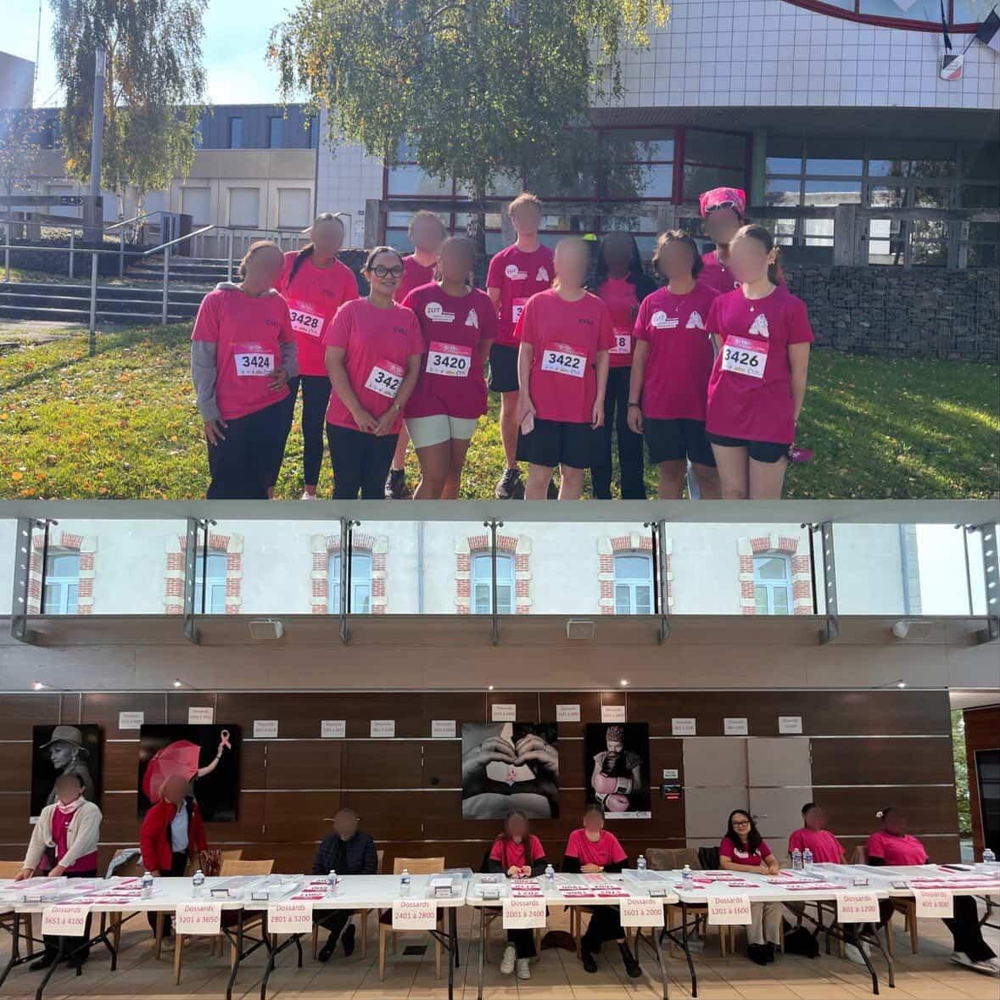
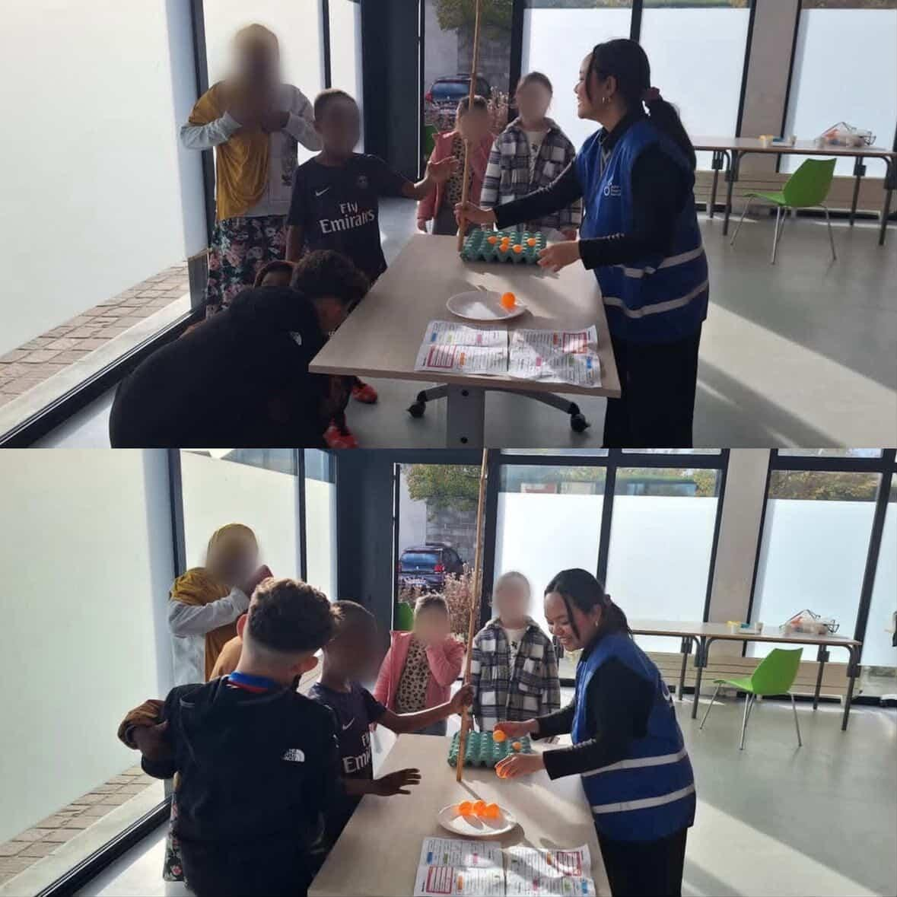
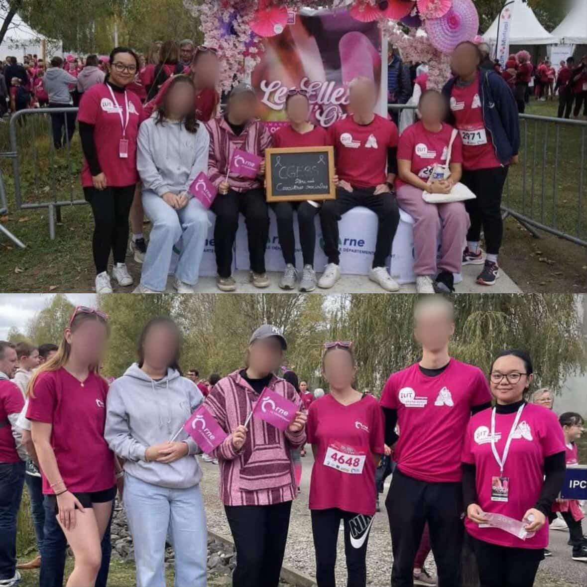
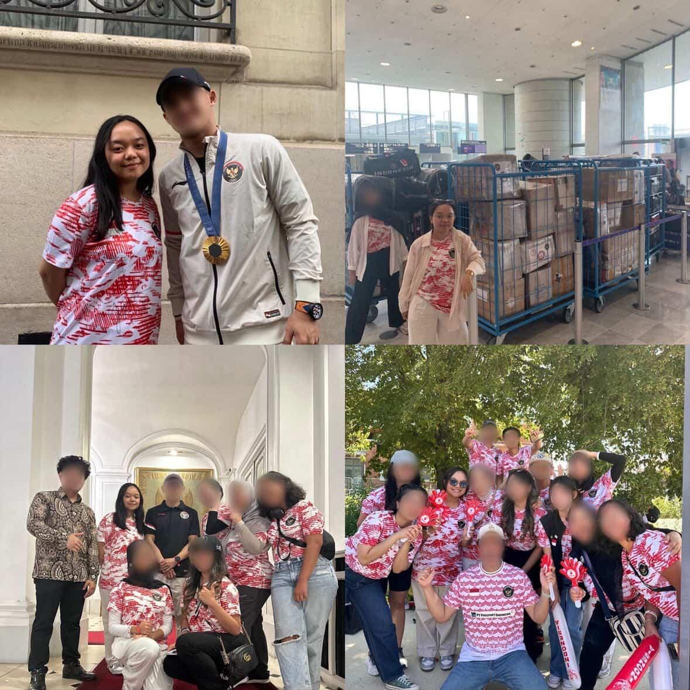
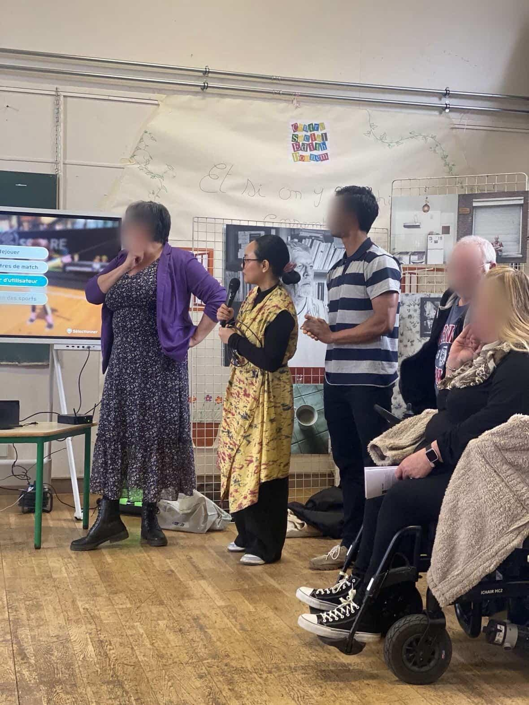
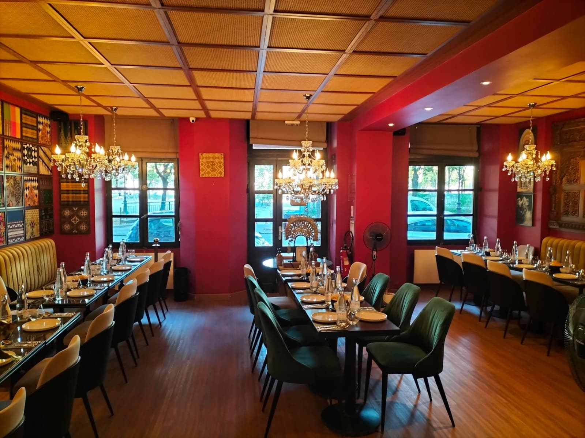
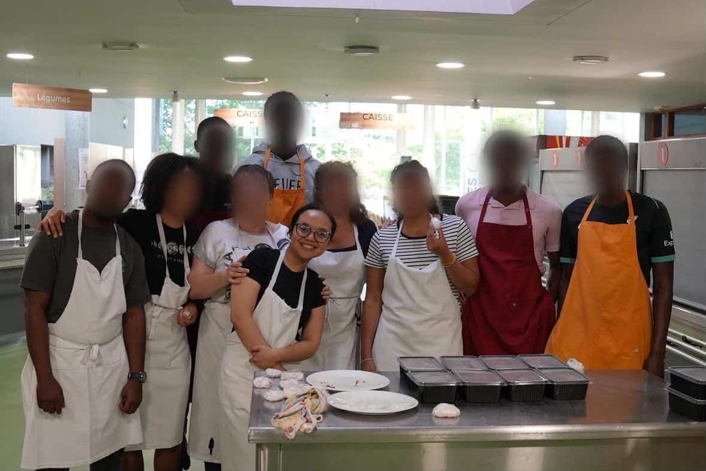
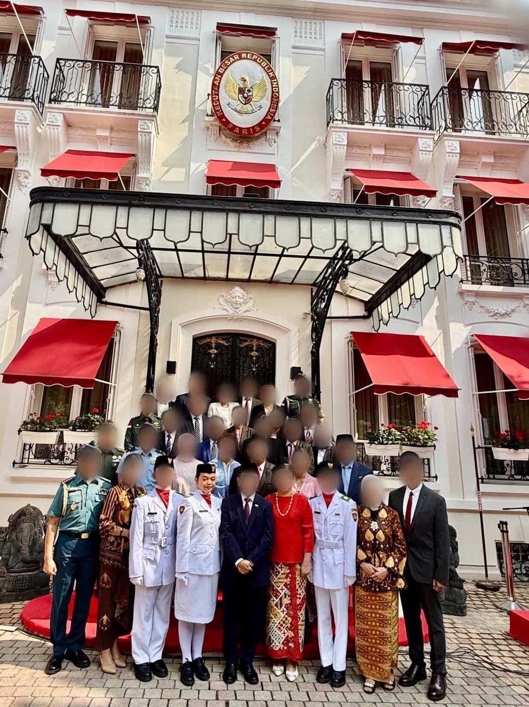
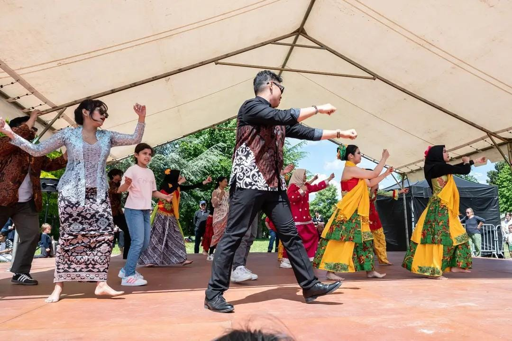


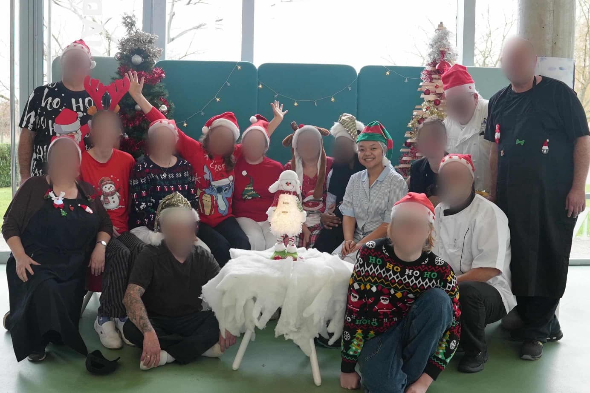
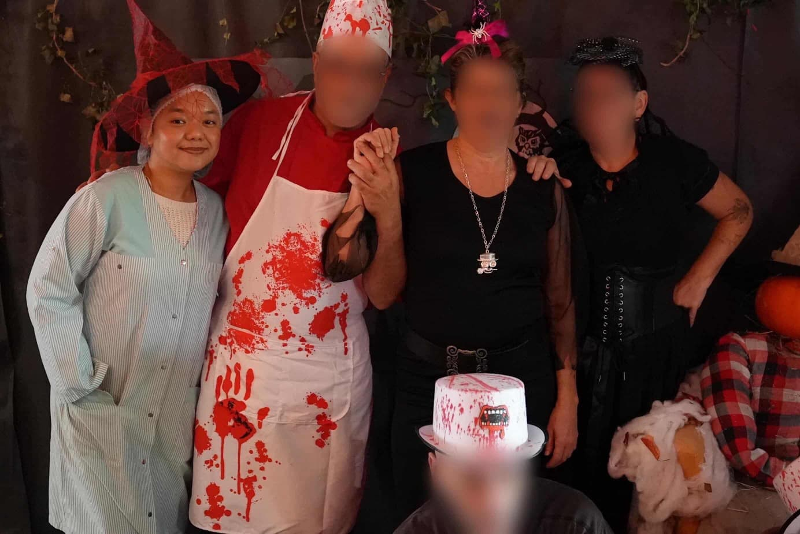